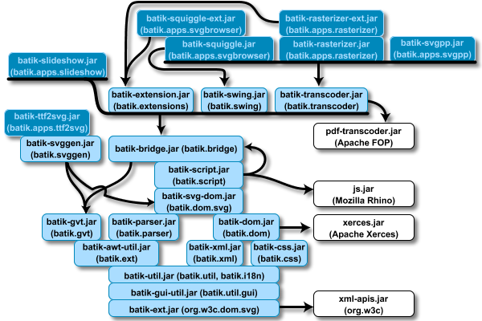

|
|
This page discusses the following Batik installation issues:
|
|
Batik requires the following systems to be already
installed in your system:
- Java Virtual Machine
A Java 1.3 or greater compatible virtual machine must be present.
|
 |  | | | Choosing a distribution to download | |  | |  |
|
To install Batik, you will need to go to the download area and download one or more
ZIP file containing the distribution of your choice. It is
good practice to verify the
integrity of the distribution files, especially if
you are using one of our mirror sites. Here are the
various components you will find in the download area and
their intended use:
- batik-version.zip (e.g.,
batik-1.5.zip)
The binary distribution contains a compiled
executable JAR files that let you get started with
Batik easily. This is the recommended distribution
if you want to look at Batik's features, or you want
to experiment with SVG and see the fun things you can
do with Batik. The binary distribution comes with a
set of sample SVG files.
- batik-src-version.zip
(e.g.,
batik-src-1.5.zip)
The source
distribution contains a complete snapshot of
the Batik source code, documentation, regression tools
and utilities as well as the script for building
Batik. That distribution is a snapshot of the CVS
repository. This is the recommended distribution for
developers who want to dive into the code and
understand how Batik can be integrated in their
applications or how Batik can be extended.
- batik-docs-version.zip
The documentation bundle contains a copy of
the Javadoc for the Batik source code.
We make nightly copies of the source tree available from the
Apache
build server. These builds represent the current state of
development and may or may not be as stable as releases.
There are two types of distributions provided.
- batik-cvs-date.zip
(e.g.,
batik-cvs-03-09-26.zip)
This contains a complete copy of the CVS tree, including
support for running regard
Batik's regression testing utility. In particular this
includes all the reference images for testing. Developers
are encouraged to get these or better use CVS directly.
- batik-src-date.zip
(e.g.,
batik-src-03-09-26.zip)
This contains all the source code and libraries needed to
build and run Batik from source. But does not include the
testing facilities.
Older releases are available from the Apache
archives. However, we strongly recommend using
the current release of Batik.
In all cases, the user should:
- Make sure a Java Development Kit (JDK) is installed on the
computer where Batik will be installed. See System Requirements. Make sure
that the
java runtime is in the PATH
environment variable.
- Select the directory where he/she wants to download the
distribution
- Download the desired distribution from the download
area
- Download the associated PGP signature (.asc) and KEYS file
(preferable) or MD5 hash (.md5). This must be done directly
from the Apache
download area to mean anything.
- Open a console and go to the directory
where the distribution was downloaded.
- Verify the integrity of the
distribution
- Unpack the distribution with Java's JAR utility:
jar xvf <distribution>
For example,
if you have downloaded batik-1.5.zip into /home/IamHere, type
the following at the command prompt:
cd
/home/IamHere
jar xvf
batik-1.5.zip
IMPORTANT: UNIX
users, do not use the unzip utility to unpack the
various Batik zip files, as this would not set the directories
access rights properly.
- From there, following the instructions specific to the
application you want to use. For example, see the SVG Browser page or the SVG Rasterizer page for an
explanation on how to use these tools.
|
|
By default, Batik source distribution comes with the Mozilla Rhino
JavaScript Engine (js.jar).
To enable other scripting languages support, you will only
need to install the correct jar files in lib
directory of Batik and to recompile your distribution.
-
For Python, you need to download Jython distribution
at the following URL http://www.jython.org.
Then you put the
jython.jar file in the
Batik lib directory.
-
For Tcl, you need to download Jacl & TclBlend
distribution at the following URL http://dev.scriptics.com/software/java.
Then you put the
jacl.jar &
tcljava.jar files in the Batik
lib directory.
Conversely, you can remove the js.jar of the
Batik lib directory to remove JavaScript
support and have a smaller distribution.
|
| | | | Jar File Dependency Graph | | | | |
|
The Batik Distribution comes with many Jar files. Not all of
them are needed in every case (although the provided
applications tend to use most of them). The following is a
diagram showing the dependencies between the various jar files
in the Batik binary distribution (it also shows the major
package interdependencies for source developers).
Jar files in white boxes are library jar files that Batik
includes from external sources. The light blue boxes correspond
to library jar files (those found in the 'lib' directory of a
binary distribution) built from Batik source code. The dark
blue boxes represent the application jar files.
When boxes touch, the box on top depends on the box below it
(there is no horizontal touching). Arrows also indicate
dependencies (the source of the arrow depends on the
destination). In some cases a thick underline with an arrow is
used to indicate that a large number of jar files share a common
dependency, this however does not indicate any dependency
between the jar files underlined.

| Some jar file names are shortened for clarity.
All 'batik' package references are short for
'org.apache.batik'.
|
It is worth pointing out that a determined/clever programmer
may be able to pare down some of these dependencies. For
example the 'batik-dom.jar' depends on 'xerces.jar' because of
the SAXDocumentFactory class in 'org.apache.batik.dom.util'. If
you didn't need to parse XML it would be possible to ignore or
break this dependency and still use the 'batik-dom.jar' file for
it's DOM implementation.
|
|
It is essential that you verify the integrity of the
downloaded files using the PGP or MD5 signatures.
The PGP signatures can be verified using PGP or GPG. First
download the KEYS as
well as the asc signature file for the particular
distribution you choose. Make sure you get these files from
the main
distribution directory , rather than from a
mirror. Then verify the signatures using
% pgpk -a KEYS
% pgpv batik-1.5.zip.asc
or
% pgp -ka KEYS
% pgp batik-1.5.zip.asc
or
% gpg --import KEYS
% gpg --verify batik-1.5.zip.asc
Alternatively, you can verify the MD5 signature on the files.
A UNIX program called md5 or md5sum
is included in many UNIX distributions. It is also available
as part of GNU
Textutils . Windows users can get binary md5 programs
from here ,
here
, or here .
We recommend using PGP signatures as they can provide a much
higher level of assurance compared with MD5.
|
|
|